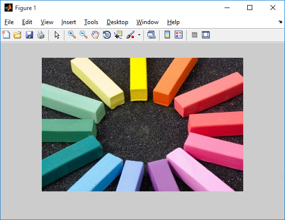
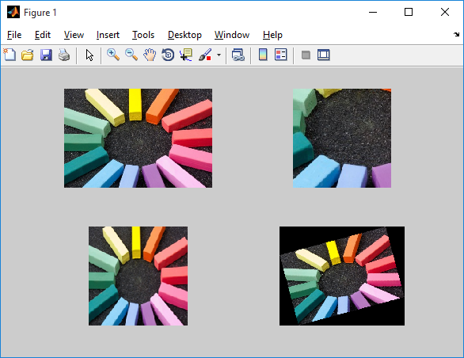

Basic commands
Let's start off by learning some basic commands in MATLAB to read, display and perform some basic operations on images such as crop, rotate and resize. To know more, or read detailed documentation for any of the commands, visit MATLAB help. You can use the following syntax for it.
doc command_name
doc imread
imread
This command reads the image from a graphics file and stores it in a variable in the matrix form. The syntax for the imread operation is shown below.
varible_name = imread('file_location')
a = imread('input.jpg')
The above command will store an image named 'input.png' into matrix form in the variable 'a'. Here's how the image looks like.
The size of matrix 'a' is decided by the dimensions of the image. Let us assume the size of 'object.png' be 266 x 400, then the matrix 'a' will have 266 rows and 400 columns. If the object is an RGB image, the size of a will be 266 x 400 x 3 where 3 represents the layers of red, green and blue.
Make sure that the image 'object.png' is in your working directory for the code to work.
imshow
This command is used to show the image that has been stored in the matrix form. The syntax for the imshow operation is below.
imshow(varible_name)
imshow(a)
It will display the image stored in variable 'a' in a new window as shown below.

For displaying the image in a new window, you can use figure, imshow(b) where figure command create a new empty window where the image can be displayed.
imtool is another function that you can use for displaying an image.
imcrop
This command crops the image according to the specified coordinates. The following syntax can be used to crop an image from the index values (x1, y1) with the length l and width w.
varible_name = imcrop(image, [x1 y1 l w])
b = imcrop(a, [90 90 200 300]); % cropping image
imshow(b) % displaying resulting image
It will crop the image 'a' into a 151 x 151 x 3 image and store it in another variable 'b'. You can use imshow to verify that the operation was performed correctly. The result is shown below.
imresize
This command resizes an image according to the specified scale, or to a specified size. Here's the syntax for using imresize.
variable_name = imresize(image, scale)
variable_name = imresize(image, output_size)
c = imresize(a, 0.5); % resizing the image to half
figure, imshow(c)
d = imresize(a, [150 150]); % resizing image to give dimensions
figure, imshow(d)
The resulting images are shown below.
imrotate
This command can be used to rotate the image by given angle (in degrees) in a counterclockwise direction around its center point. To rotate the image clockwise, specify a negative value for angle. 'imrotate' makes the output image large enough to contain the entire rotated image. Here's the syntax for doing the same.
variable_name = imrotate(image, degrees)
e = imrotate(a, 15); % rotate 15 degree in clockwise
imshow(e)
By default, imrotate uses nearest neighbor interpolation, setting the values of pixels in output image that are outside the rotated image to 0 (zero).
subplot
Creates axis in tiled positions. Whenever we need to display two or more images in one window, we use subplot. Here's the syntax.
subplot(m, n, p)
It divides the current figure into an 'm x n' grid and creates an axes for a subplot in the position specified by 'p'. MATLAB numbers its subplots by row, such that the first subplot is the first column of the first row, the second subplot is the second column of the first row, and so on. If the axes already exists, then the subplot(m,n,p) makes the subplot in position p the current axes.
Example
subplot(2, 2, 1), imshow (a)
subplot(2, 2, 2), imshow (b)
subplot(2, 2, 3), imshow (c)
subplot(2, 2, 4), imshow (e)

subplot(2, 2, 1) will divide the figure into a 2 x 2 matrix. '1' is representing the position where the image 'a' is going to be displayed in the 4 positions.